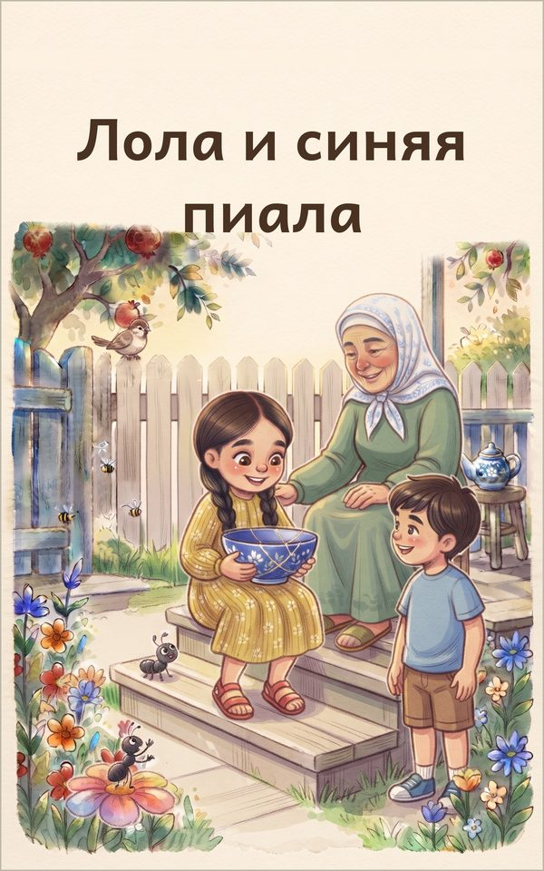

Лола и синяя пиала
Добрая история о правде для детей 3–6 лет
Кружась по саду, Лола нечаянно разбивает любимую синюю пиалу бабушки. Она прячет осколки и никому не говорит, но ножки становятся тяжёлыми, лепёшка кажется невкусной, а воробей и крошечный муравей будто всё замечают. Когда Лола наконец решается сказать правду, бабушка показывает ей, что правда дороже любой посуды, а разбитое можно склеить. Тёплая книжка с картинками, ритмом, повторами и звукоподражаниями, чтобы читать вслух детям 3–6 лет.
Продажа электронной книги скоро откроется
Эта книга есть также на языках: English